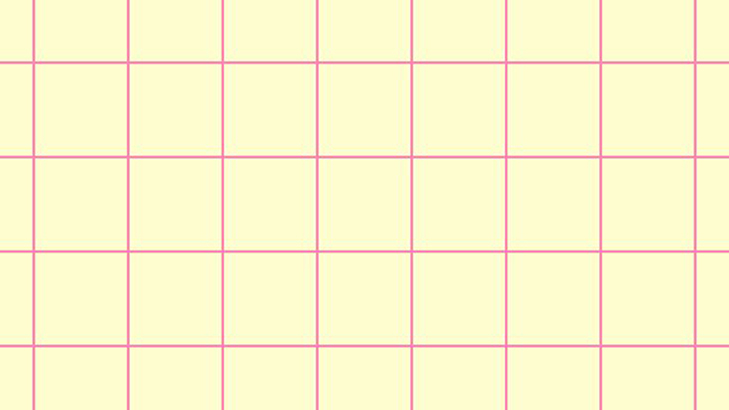

Cielo Huerta


Soy estudiante de Diseño Gráfico, actualmente cursando el cuarto año de la carrera. Me interesa el diseño como una herramienta de comunicación. A través de mis proyectos busco conectar la sensibilidad visual que generen reflexión y diálogo. Me adapto con facilidad a distintas formas de trabajo, disfruto de trabajo en equipo y de los procesos creativos. Me motiva aprender de otras miradas y aportar desde lo visual a proyectos con sentido. Me interesa explorar el valor simbólico de las imágenes, los materiales y los lenguajes visuales como medio para transmitir ideas y emociones.